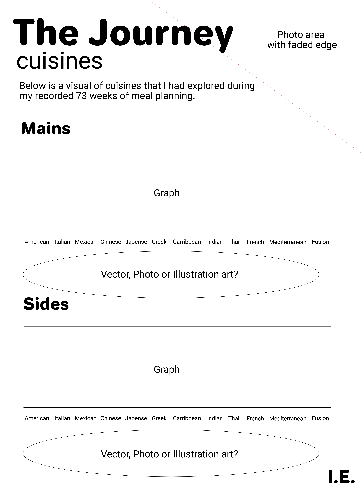
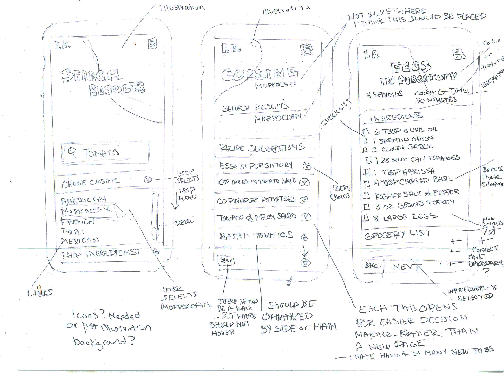
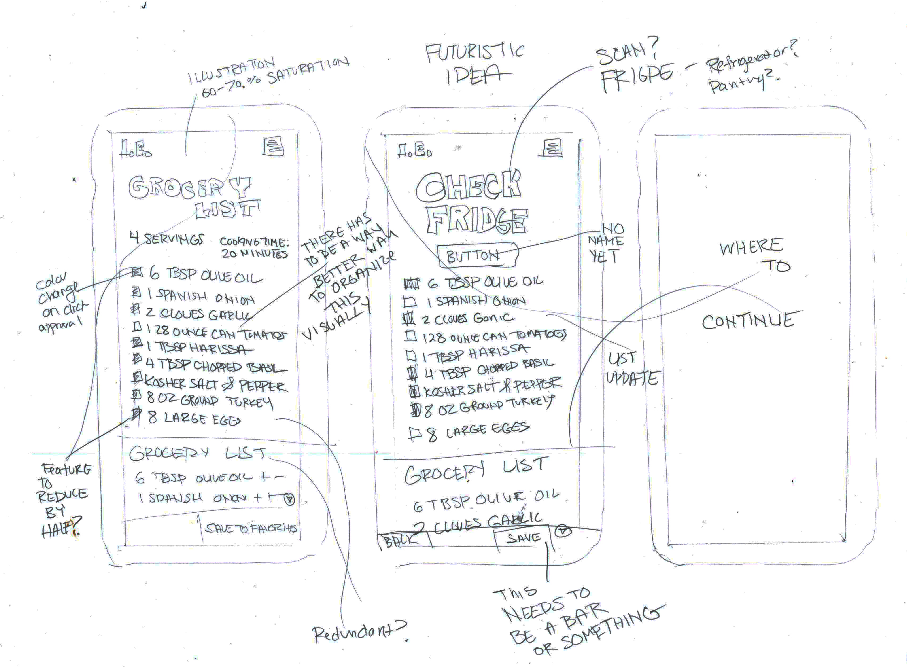
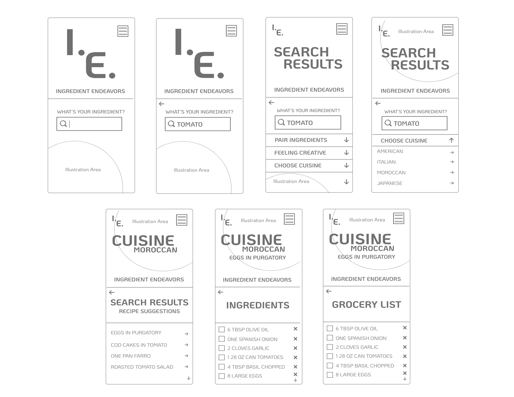

My process is very much like cooking and something that I enjoy, task based work! Below are tools that I had used to create both digital and illustrative artwork and designs. Illustration is my background and I use those tools often in my professional career. Usually on a daily basis! For the digital side, I have been growing through lessons in my career, continuing education courses that I had taken in 2012, and now the MAGWD program.
The goal and purpose of Ingredient Endeavors is to make meal planning and cooking approachable to anyone, whether they are an experienced cook or a novice. For that reason, my personas are a very wide variety for any life stage or life style. The app is encouragement to explore cooking and perhaps streamline their planning capabilities by the ability to search by ingredient and narrow through cuisine types.

This infographic sketch is based off of the tally I had done for cuisines repeated throughout the 73 weeks. It is very basic and the start for my thoughts on text, image and graph layouts on the page.
Coming out of my experience with cuisines, cooking, prep, and through all of the data I gathered, I wanted to make this accessible and fun for a novice or an experienced cook to see what ingredients are available and what can stem from those in assisting with their ingredients. This is where the process started for the prototype.
 Moving forward with my findings from the sketches and user feedback on my prototype I created wireframes in Adobe Xd. I cleaned them up to be much more simplified so that they would be easier for a user to process and complete their task.
Here is my initial exploration in branding for Ingredient Endeavors. I explored color palettes that are not traditional to food applications. Colors that are typical are red, green, and yellow. I also explored different text layouts for a logotype. At this time I wanted to explore the layout and had not yet gone into different font options.

Since Illustration is my background I felt very strongly about including them in this project. My drawings started with very loose sketches that I then transferred to watercolor paper. The style that I chose is based off of what I very much enjoyed while in undergrad, studio classes! They are meant to look gesturely. The style is a twist on the very loose watercolor look that I use in my professional work combined with the past style.